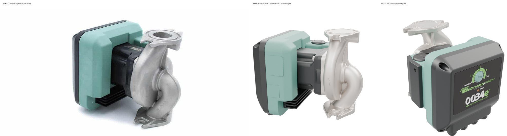
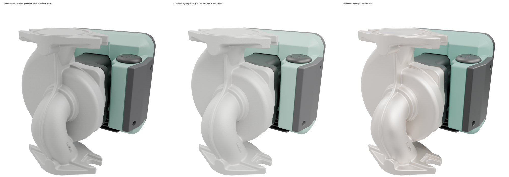

This workspace is private. Enter the password to continue.
Reviewed Oct 6, 2026. All four files checked: F2 and SF2, Flat Label and Artwork Etched. All four share the same structure, so every item below applies to all of them. This page lists what worked, what must change, the must-haves for every delivery from now on, and the next deliverables in order.
Left is Taco's own product photo. Middle and right are your delivered mesh, untouched, with only VNTANA's approved materials and the calibrated lighting applied. The geometry is good. The look comes from materials and lighting, and that is what this review is about.


| Finding | |
|---|---|
| + | Geometry is clean and high-poly (about 960k tris), smooth at 4K. Keep it. |
| + | Both side-label versions delivered (Artwork Etched and Flat Label), as asked. |
| + | Textures packed into the .blend at 4K, nothing missing. |
| + | Clean scene: no animations, curves, or constraints. Neutral HDRI packed, no extra lights, AgX, square output. |
| + | Folder structure and naming of the deliverables were easy to follow. |
| − | Material library was skipped. The repeatable materials were meant to be built and signed off first (dashboard Section 1). Instead, every part shares one material (Material.002) baked into one texture atlas for the whole pump. Taco green, stainless and cast iron cannot be reused on other SKUs this way, and it is why the metal reads chalky and the plastic flat in renders.
Fix: build the library first (see Next deliverables), then rebuild 0034e with separate materials from it. |
| − | The GLB does not match the .blend. The .blend has 9 separate meshes, but all four GLBs are one merged mesh with one material, exported from a different file (Blender 4.5). The platform shows a single part, so part lists, highlighting and explode cannot work, and the parts CSV has nothing to map to. Fix: export the GLB from the delivered .blend. Same meshes, same names, same materials. |
| − | Hidden scale and wrapper empties. All meshes sit under two empties (RootNode > body), and RootNode carries a 0.6528 scale, so the pump is about 35% smaller than real size. The bottom sits 4 mm above the ground and the origin is not at bottom-center.
Fix: remove the empties, apply all transforms (scale 1.0 on every object), true real-world size, origin bottom-center, bottom at Z = 0. Never scale the product to fit a camera; move the camera instead. |
| − | Parts are named by material, not by part. Meshes are called Stainless_Steel, Powder_Coated_Steel, Plastic_Casing. The parts CSV lists body (an empty, not a mesh) and leaves out Main_casing and Rear_Casing.
Fix: one mesh per serviceable part with its real name (volute / pump body, motor housing, control cover, terminal box, etc.). The CSV must list exactly the meshes in the file, one row each. |
| − | Cast surface has almost no grain. The normal map is nearly flat (with some baking artifacts) and the height map is blank, so the cast iron reads smooth and lumpy instead of sand-cast. Fix: the shared metal materials carry real cast grain at true scale. Check it in a close-up 4K render before delivery. |
| − | Old cameras. The file has the 11 cameras from our old sample file, not Taco's 8 named angles. The hero is front-right instead of FRONT-TOP-LEFT, and several shots crop the product. (Our sample file still had the old cameras; that part is on us.) Fix: use the 9 cameras from the latest VNTANA template (3d-toolkit workspace). Delete the old 11. |
| − | Lighting settings. Exposure is +1.0 with the original Neutral HDRI at strength 1.0. This is a big part of the washed-out look. Fix: use the World and color settings from the latest template: Studio HDRI at 1.0, ACES 1.3, exposure 1.0. |
| − | Flat label is not flush. On the Flat Label version, the side label is angled and does not sit flat against the casing. Fix: Taco confirmed 0034e/0026e use sticker labels: deliver the Flat Label version only, label flat and flush on the casing, text in its own material. |
| − | Flange bores are closed. The flange openings are solid discs; the real part is open. Fix: open the bores. |
| − | Variant check. The F2 files look like the stainless build. Per the catalog, F2 is cast iron and SF2 is stainless. Fix: confirm which build is which and apply the right body material to each. |
These are acceptance requirements. Items marked Required apply now. The template is now ready, so every item applies. The full rules are on the dashboard.
.sbs) and packaged .sbsar. For each asset: the Substance Painter project (.spp) with layers intact. If this is outside the current scope, tell us and we will cover it.Taco_Green_Plastic, SandCast_Stainless, Cast_Iron, Black_Satin_Plastic). No single baked atlas for the whole product. Faceplate and label artwork stay as image textures.IMG-01_FRONT-TOP-LEFT_HERO, IMG-02_FRONT, IMG-03_FRONT-TOP-RIGHT, IMG-04_LEFT, IMG-05_BACK, IMG-06_RIGHT, IMG-07_TOP-DOWN, IMG-08_BOTTOM. Square 1:1, the whole product visible with an even margin, no cropping. Match the reference guide.